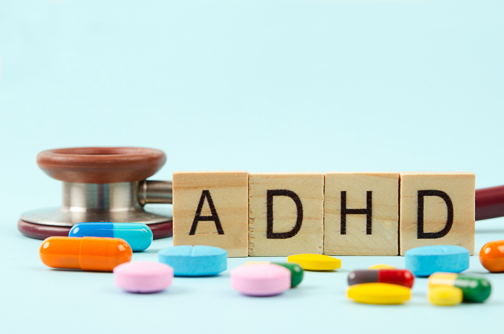

Attention-deficit/hyperactivity disorder (ADHD) is a chronic condition that affects
millions of children and often continues into adulthood. ADHD includes a combination of persistent
problems, such as difficulty sustaining attention, hyperactivity and impulsive behavior.
ADHD is divided into three primary presentations:
Predominantly inattentive (ADHD-PI or ADHD-I)
Predominantly hyperactive-impulsive (ADHD-PH or ADHD-HI)
Combined type (ADHD-C).
Children with ADHD may also struggle with low self-esteem, troubled relationships
and poor performance in school. Symptoms sometimes lessen with age. However, some people never completely outgrow their ADHD symptoms. But they can learn strategies to be successful.
It is normal for children to have trouble focusing and behaving at one time or another.
However, children with ADHD do not just grow out of these behaviors. The symptoms continue, can be
severe, and can cause difficulty at school, at home, or with friends.
While treatment won't cure ADHD, it can help a great deal with symptoms. Treatment
typically involves medications and behavioral interventions.
Attention deficit hyperactivity disorder (ADHD) is a condition that affects people's
behaviour. People with ADHD can seem restless, may have trouble concentrating and may act on impulse.

People with ADHD may struggle more than others to focus on some tasks (such as schoolwork),
but can maintain an unusually intense level of attention for tasks they find rewarding or interesting.
It affects about 5-7% of children when diagnosed via the DSM-IV criteria, and 1-2% when diagnosed via the
ICD-10 criteria. Rates are similar between countries and differences in rates depend mostly on how it is
diagnosed.
ADHD is diagnosed approximately twice as often in boys than in girls, and 1.6 times more
often in men than in women, although the disorder is overlooked in girls or diagnosed in later life
because their symptoms sometimes differ from diagnostic criteria. About 30-50% of people
diagnosed in childhood continue to have ADHD in adulthood, with 2.58% of adults estimated to have ADHD
which began in childhood. In adults, hyperactivity is usually replaced by inner restlessness, and adults
often develop coping skills to compensate for their impairments.
The condition can be difficult to tell apart from other conditions, as well as from high
levels of activity within the range of normal behaviour. ADHD has a negative impact on patients' health
related quality of life and that this may be further exacerbated by, or may increase the risk of, other
psychiatric conditions such as anxiety and depression.